Portfolio


Sobre Mí
Hola, soy Pablo y soy estudiante de Ingeniería Mecatrónica de 4to semestre, anteriormente estudiaba Ingeniería Biomédica pero descubrí que mecatrónica es lo mío, ya que mi pasión es por entender como es que funciona la tecnología que usamos hoy en día y sin duda los robotos o brazos robóticos que se usan en las empresas de mi cuidad, aunque otra de mis pasiones es el Beisbol, me encanto mucho este deporte y en la universidad pertenzco al equipo, desde muy chiquito lo he jugado y alguna vez soñé en ser jugador profesional y jugar para los pericos de Puebla.
Ya estando en la universidad he descubierto que Mecatrónica me apasiona profundamente porque combina diseño, construcción y tecnología de vanguardia. Me encanta crear robots y sistemas que no solo sean funcionales, sino también innovadores. Además, disfruto entender cómo funcionan las tecnologías que utilizamos diariamente, desde dispositivos inteligentes hasta procesos industriales automatizados. Esta carrera es crucial en la actualidad, ya que impulsa avances en sectores como la automatización, la robótica y la inteligencia artificial, y su importancia seguirá creciendo en el futuro a medida que la tecnología se integre aún más en nuestras vidas. La mecatrónica representa la oportunidad de ser parte del cambio tecnológico y de diseñar soluciones para los desafíos del mañana.
CIRCUITO 555
El 555 es un temporizador integrado que se utiliza para generar retardos de tiempo, señales de onda cuadrada, y controlar la duración de pulsos. Es versátil y se usa en osciladores, temporizadores y circuitos de control.
Diagrama electrico con el circuito 555
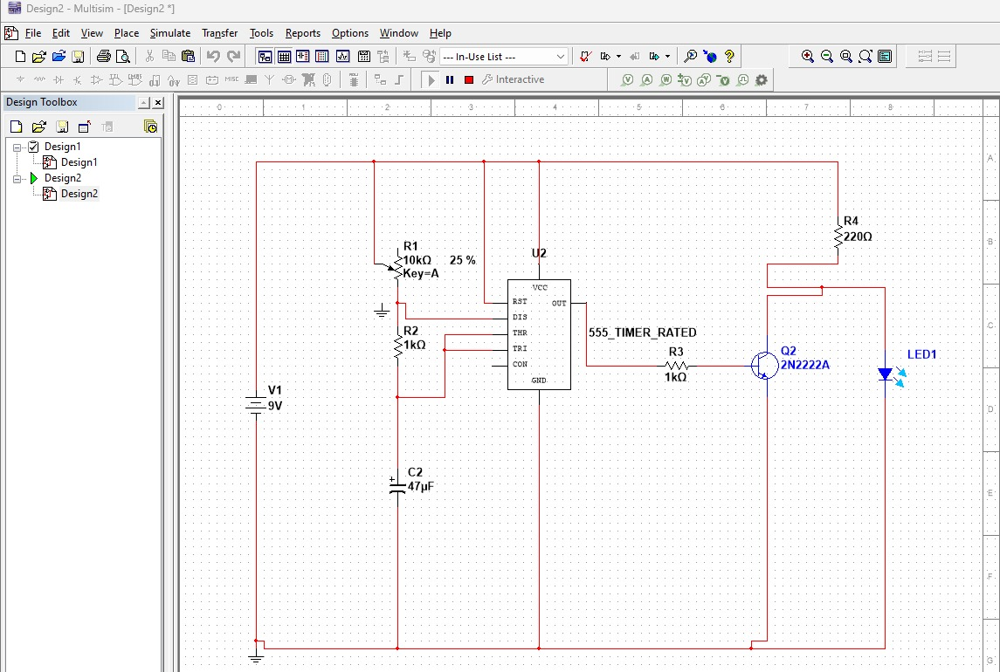Se simuló en Proteus el diagrama dado por el profesor con un circuito 555
Diagrama en TinkerCad con el circuito 555

Se construyó el mismo diagrama en Tinkercad
Diagrama construido en laboratorio

Aquí se muestra el dispositivo ya ensamblado con los componentes electrónicos físicos, mostrando cómo está construido en su forma final:>
Pagina web Básica
Introducción
Una página web es un documento digital accesible en Internet, compuesto por texto, imágenes y elementos interactivos, y está estructurado con HTML, CSS y JavaScript. En nuestro caso fue programada en HTML.
Pagina web Básica
 Aprendimos a hacer nuestra pagina web, pudimos trabajar haciendo titulos, agregar imagenes, videos y texto en general. Lo programamos en visual studio code, usando el lenguage HTML. .
1. Comenzamos con códigos básicos en visual studio code, en lenguaje .html, donde declaramos titulos, tamaños de letras, imagenes, videos, referencias.
2. Una vez terminada la programación comenzamos con convertirlo a index, para poder subirlo
3. Tenmos que tener cada imagen y video utilizado en una carpeta para poder subirla en gitihub, con esto nuestra pagina podrá verse con todas las imagenes y videos que utilizamos.
4. Una vez adentro de gitihub, seguimos los pasos que nos dictó el profesor para poder construir y subir nuestra página.
5. Una vez construida nuestra página, arrojó un link el cual es nuestra página que creamos.
Aprendimos a hacer nuestra pagina web, pudimos trabajar haciendo titulos, agregar imagenes, videos y texto en general. Lo programamos en visual studio code, usando el lenguage HTML. .
1. Comenzamos con códigos básicos en visual studio code, en lenguaje .html, donde declaramos titulos, tamaños de letras, imagenes, videos, referencias.
2. Una vez terminada la programación comenzamos con convertirlo a index, para poder subirlo
3. Tenmos que tener cada imagen y video utilizado en una carpeta para poder subirla en gitihub, con esto nuestra pagina podrá verse con todas las imagenes y videos que utilizamos.
4. Una vez adentro de gitihub, seguimos los pasos que nos dictó el profesor para poder construir y subir nuestra página.
5. Una vez construida nuestra página, arrojó un link el cual es nuestra página que creamos.
Pagina Terminada
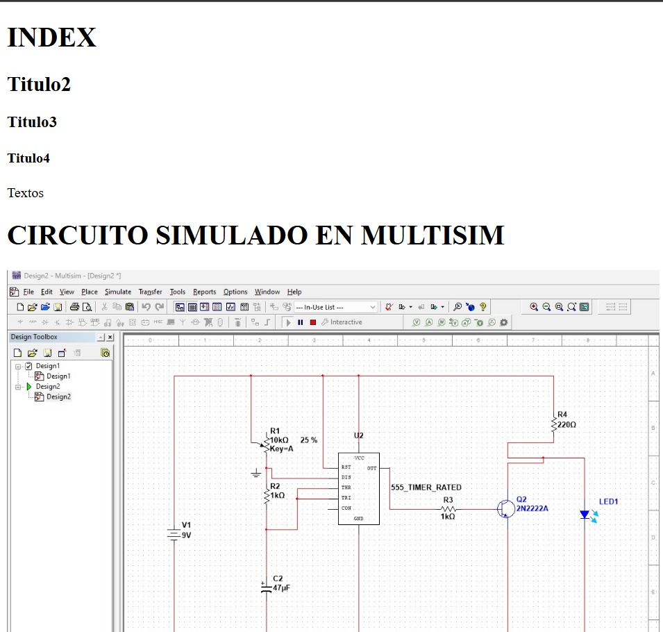 Ir anuestra PáginaConclusión
La página funciona correctamente, muestra todas las imagenes utilizadas, tamaños de letras y el vinculo que construimos. Se recomienda enfocar el tipo de programación para un ajuste de posición de las imagens, titulos y vinculos.Referencias
Admin. (2022, 28 marzo). Timer 555. Industrias GSL. https://industriasgsl.com/blogs/automatizacion/timer-555?srsltid=AfmBOop4nYCoLneuxLuhn1hGwqrUJBIFrKGvdmU3R-xY4YT1C8GRBmPh
Martínez, L., & Torres, M. (2019). Aplicaciones móviles y el Internet de las cosas. Universidad Técnica.
Arduino Básico Salidas Digitales
El Arduino Uno es una de las placas de desarrollo más populares de la plataforma Arduino, diseñada para facilitar la creación de proyectos electrónicos. Equipado con un microcontrolador ATmega328P, ofrece 14 pines digitales (6 de ellos PWM) y 6 entradas analógicas, lo que lo hace ideal tanto para principiantes como para profesionales. Su fácil integración con sensores, motores y otros dispositivos lo convierte en una herramienta versátil en áreas como la robótica, la automatización y el Internet de las cosas (IoT).
¿Qué nos ofrece Arduino UNO?
Popularidad: Es la placa más usada en proyectos educativos y de prototipado, gracias a su simplicidad y gran cantidad de recursos en línea.
Fuente abierta: Al ser un proyecto de hardware libre, cualquiera puede replicar y modificar su diseño, fomentando la colaboración y personalización.
Programación: Se programa mediante el lenguaje de Arduino basado en C/C++, utilizando el entorno de desarrollo Arduino IDE.
Alimentación: Se puede alimentar a través de USB o con una fuente externa de 7 a 12V.
Comunicación: Soporta protocolos como UART, SPI e I2C, permitiendo que interactúe con una gran variedad de periféricos.
El Arduino Uno ha revolucionado el mundo del prototipado rápido, permitiendo a ingenieros, estudiantes y entusiastas materializar sus ideas de manera sencilla y económica.
Componentes Electrónicos
1. Arduino UNO
2. Placa de Pruebas
3. Resistencias 1K
4. Leds
5. Display de 7 segmentos
6. Alambre o cables macho-macho
4_Salida digital led. Práctica Número 4: Señal de un solo led conectado directamente a una salida de nuestro arduino
5_Salida digital protoboard. Práctica Número 5: Señal de un solo led conectado en una placa de pruebas
Código Usado:
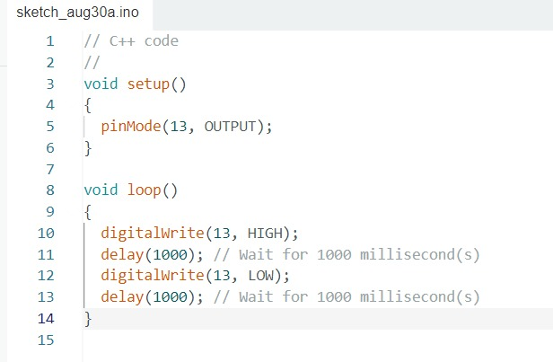6_Salida digital leds I. Una salida digital para dos leds
Código Usado:

7_Salida digital leds II. Una salida digital para cada led
Código Usado:
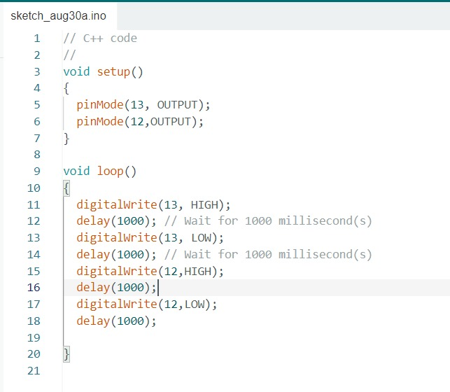8_Salida digital display 7 segmentos. Encender un Display de 7 Segmentos
Código Usado:

9_Salida digital display 7 segmentos. Contador del 1-5
Código Usado:
 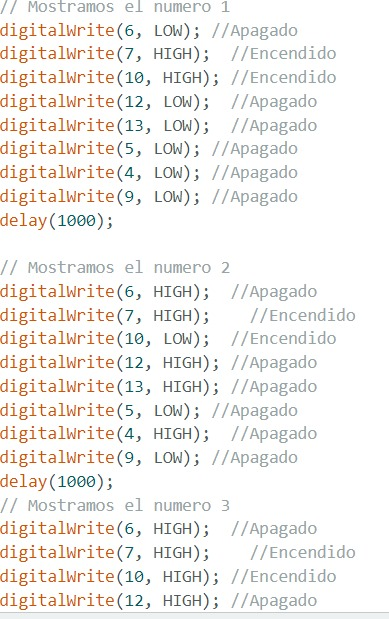
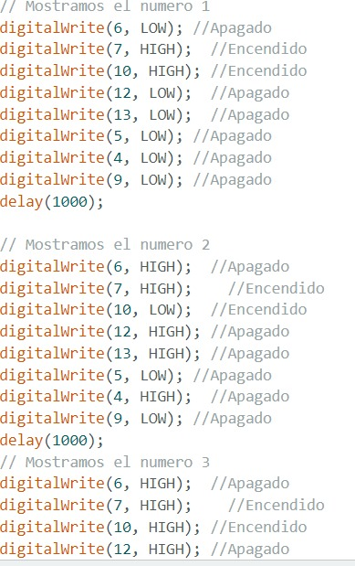
1_Arduino Basico Entradas Digitales
Una entrada digital en Arduino es un pin en la placa que puede leer el estado de un interruptor, sensor o cualquier dispositivo externo que proporcione una señal de dos estados: ALTO (HIGH) o BAJO (LOW). Básicamente, detecta si hay o no una señal eléctrica.
¿Cómo Funciona?
ALTO (HIGH): Representa un estado lógico de "1", que indica que hay un voltaje aplicado al pin, generalmente cercano a 5V (en placas de 5V como el Arduino Uno) o 3.3V (en placas de 3.3V como el Arduino Due). BAJO (LOW): Representa un estado lógico de "0", que indica que el pin está conectado a tierra (0V).
Componentes Electrónicos
1. Arduino UNO
2. Placa de Pruebas
3. Resistencias 1K
4. Leds
5. Push-Buttons
6. Alambre o cables macho-macho
1_Entrada digital boton. Boton que controla un led
Código Usado:
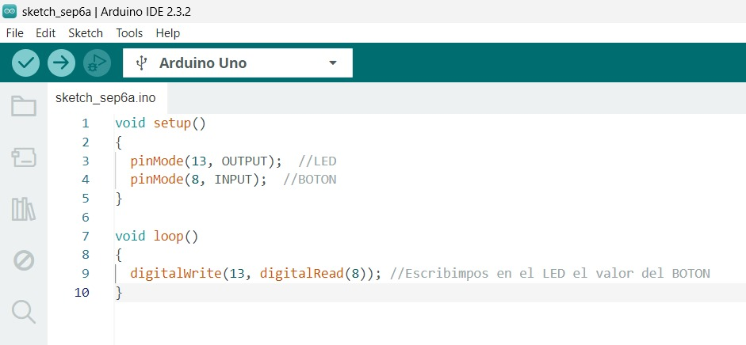2_Entrada digital 2 botones. Dos botones que controlan dos leds
Código Usado:

3_Entrada digital condicionales boton
Código Usado:

4_Entrada digital condicionales 2 botones. Encender leds con condiciones en los botones
Código Usado:

5_Contador leds. Contador binario
Código Usado:
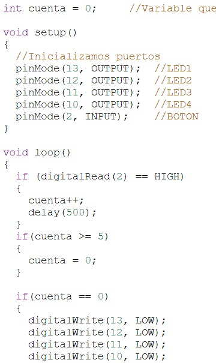
6_Condicionales OR boton. Simular la función "OR"
Código Usado:

7_Condicionales AND botones. Simular función "AND"
Código Usado:

2_Arduino Basico Servomotores
Un servomotor es un actuador que permite controlar la posición angular, la velocidad y la aceleración de un eje de manera precisa. A diferencia de un motor estándar que simplemente gira cuando se le aplica corriente, el servomotor tiene la capacidad de moverse a una posición específica y mantenerse en ella, gracias a un mecanismo de retroalimentación interna.
Funcionamiento:
Un servomotor recibe una señal de modulación por ancho de pulso (PWM) para determinar la posición del eje. La duración de los pulsos (generalmente entre 1 ms y 2 ms) determina la posición angular, donde 1 ms suele corresponder a 0° y 2 ms a 180°. El potenciómetro dentro del servomotor compara la posición actual con la deseada y ajusta el motor en consecuencia.
Componentes Electrónicos
1. Arduino UNO
2. Placa de Pruebas
3. Resistencias 1K
4. Potenciometros
5. Servomotores
6. Alambre o cables macho-macho
1_Servo. Giro de 90º
Código Usado:

2_Servomotor varias posiciones. Giro de 90º y 180º
Código Usado:

3_Servomotor y potenciometro. Giro controlado con un potenciometro
Código Usado:

4_2 Servomotores y un potenciometro. 2 servomotores controlados por un potenciometro
Código Usado:

5_2 Servomotores y 2 Potenciometros. Cada servomotor es controlado por su potenciometro
Código Usado:

6_Fuente Externa. Podemos alimentar a nuestro Arduino y servo a una fuente externa para mayor seguridad de nuestro equipo
Código Usado:

Referencias Bibliográficas
Arduino - home. (s. f.). https://www.arduino.cc/
De AdvancedMotionControls, P. (2024, 29 agosto). What is a Servo Motor: Definition, Origins, Components, Types & Applications. ADVANCED Controles de Movimiento. https://www.a-m-c.com/es/servomotor/
Admin. (2022, 28 marzo). Timer 555. Industrias GSL. https://industriasgsl.com/blogs/automatizacion/timer-555?srsltid=AfmBOop4nYCoLneuxLuhn1hGwqrUJBIFrKGvdmU3R-xY4YT1C8GRBmPh
Martínez, L., & Torres, M. (2019). Aplicaciones móviles y el Internet de las cosas. Universidad Técnica. "El uso de App Inventor para el desarrollo de aplicaciones IoT accesibles y de bajo costo ha permitido ampliar el alcance de la automatización, haciendo posible la creación de soluciones prácticas y asequibles para diferentes entornos" (p. 73).
App Inventor
Introduccion
App Inventor es una plataforma de desarrollo de aplicaciones móviles diseñada por el MIT, que permite crear aplicaciones para Android de manera visual e intuitiva, sin necesidad de conocimientos avanzados de programación. Utiliza una interfaz de arrastrar y soltar bloques de código, similar a la lógica de un rompecabezas, lo que facilita la construcción de funcionalidades. Esta herramienta es ideal para principiantes y estudiantes, ya que promueve el aprendizaje de conceptos básicos de programación y lógica a través de la creación de aplicaciones prácticas. Además, su enfoque educativo permite desarrollar habilidades tecnológicas y creativas desde edades tempranas.
En esta práctica, diseñamos una aplicación con la que contralaremos nuestro brazo robotico.
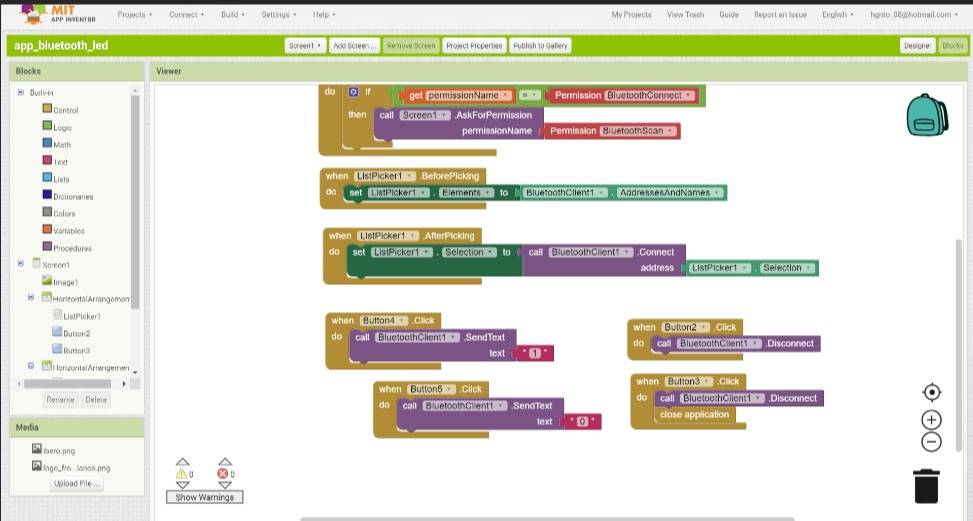Para esto, poco a poco vamos construyendo nuestra aplicación, la cual podemos personalizar con lo que queramos, app inventor utiliza una programación en bloques, la cual la hace mas facil de contruir.
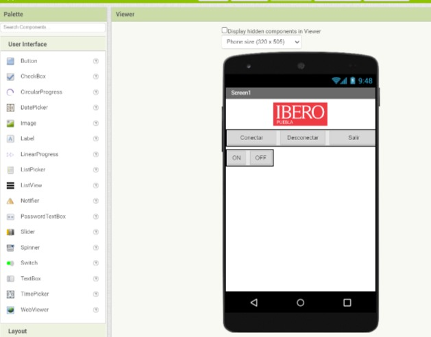Despues, necesitamos conectar nuestro arduino, en donde usaremos un modulo HC-05, el cual funciona como un bluethot, y así podremos enlazar nuestra aplicacion con nuestro arduino.

A continuación la conexión entre el arduino y el modulo.

Esta práctica de construcción de una app sencilla en App Inventor y su enlace a un módulo Bluetooth en Arduino me permitió experimentar de primera mano la integración entre software y hardware, facilitando el control y monitoreo de dispositivos de manera remota. Esta experiencia no solo consolidó mis conocimientos en interfaces de comunicación inalámbrica, sino que también demostró el potencial de App Inventor como herramienta para prototipar soluciones IoT (Internet de las cosas) de bajo costo. La implementación de este tipo de aplicaciones abre un amplio campo de posibilidades en automatización y control, donde podemos desarrollar sistemas de monitoreo ambiental, control de dispositivos domésticos, y aplicaciones de robótica educativa, mejorando la accesibilidad y funcionalidad de proyectos tecnológicos.
Conclusion
Al realizar esta práctica pudimos observar que este modulo HC-05, no servirá La realización de esta práctica permitió adquirir conocimientos fundamentales sobre el uso del módulo Bluetooth HC-05 en conjunto con un Arduino Uno, así como su integración con aplicaciones móviles desarrolladas en App Inventor. A través de esta experiencia, se logró establecer comunicación inalámbrica entre el Arduino y un dispositivo móvil, destacando la funcionalidad básica para conectar, desconectar, encender, apagar, y salir desde la aplicación creada. Este ejercicio no solo reforzó habilidades en la programación del Arduino y la configuración del HC-05, sino también en el diseño de interfaces simples y funcionales mediante App Inventor. Dicho conocimiento es aplicable en diversos proyectos de la vida real, como el control remoto de dispositivos, asi como en nuestro proyecto final de 2 materias.
Referencias
Admin. (2022, 28 marzo). Timer 555. Industrias GSL. https://industriasgsl.com/blogs/automatizacion/timer-555?srsltid=AfmBOop4nYCoLneuxLuhn1hGwqrUJBIFrKGvdmU3R-xY4YT1C8GRBmPh
Martínez, L., & Torres, M. (2019). Aplicaciones móviles y el Internet de las cosas. Universidad Técnica.
Brazo Robótico
¿Qué es y para qué sirve un brazo robótico?
Un brazo robótico en la industria es un tipo de robot articulado que simula los movimientos de un brazo humano para realizar tareas repetitivas, precisas y a menudo peligrosas para los trabajadores. Este tipo de robot es ampliamente utilizado en sectores como la manufactura, ensamblaje, soldadura, pintura, y manejo de materiales, donde su precisión y velocidad aumentan la eficiencia y calidad de producción, reduciendo costos y riesgos de accidentes. Además, los brazos robóticos pueden trabajar de manera continua sin pausas, lo que maximiza la productividad y permite realizar operaciones en entornos hostiles para los humanos.
En esta práctica, tenía que ser capaz xde levantar un pelota y pasarla a otro brazo, se diseño y construyó un brazo robotico pequeño, fue construido envase a piezas modelas en 3D, 4 servomotores y programación en arduino.
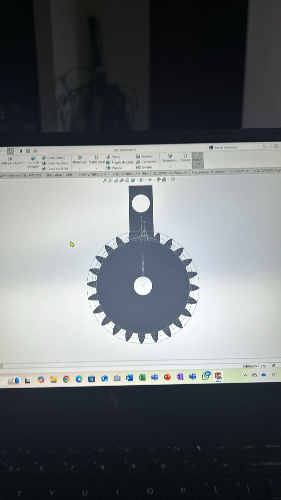Una vez teneindo las piezas impresas en 3D, se ensambló cada una con tornillos M2.
Una vez ensambladas las piezas, se programó en arduino, en done declaramos los 4 servomotores, una vez hecho el prgrama, se probó su funcionamiento, con pruebas en el servomotor de la pinza.
Una vez hechas las pruebas de los servos, se puede ver su funcionamiento de cada uno, un servo simuló el movimiento de un hombro, el siguiente de un brazo, el siguiente del codo y el ultimo será la mano (pinza).
Ya terminado el brazo, tanto ensamble y programación, el robot cumplió efectivamente con las tareas. No se detectaron errores.
Brazo Robótico controlado por Bluethoot

¿Para qué nos serviría controlarlo a distancia un brazo robótico?
Industria: Ensamblaje, soldadura y manipulación de materiales. Entornos peligrosos: Manejo de materiales tóxicos, rescate y desactivación de explosivos. Medicina: Cirugías remotas y rehabilitación. Educación e investigación: Enseñanza y experimentación en robótica y automatización. Arte y entretenimiento: Coreografías y tareas creativas como esculpir o pintar. Uso personal: Asistencia doméstica y apoyo a personas con discapacidad.
Diseño y Construcción
Una vez hecho el brazo anterior controlado por servomotores, como segundo trabajo, fue programarlo para poder ser controlado a distancia, en el cual diseñamos una aplicación que nos ayudará a moverlo e implementamos un modulo HC-05, que con ese modulo enviaremos señales a nuestro arduino y el arduino ejecutará los movimientos del brazo.
Aplicación Móvil
La programamos y construimos usando App Inventor, la cual es una aplicación bastante facil de usar para crear aplicaciones.


Funcionamiento de brazo
Despues de programarlo con nuestro arduino, el robot se movió de forma precisa al presionar cada botón, despues de haber visto como mandamos las señales con nuestro modulo HC-05.
Código y funcionamiento
Código Arduino UNO
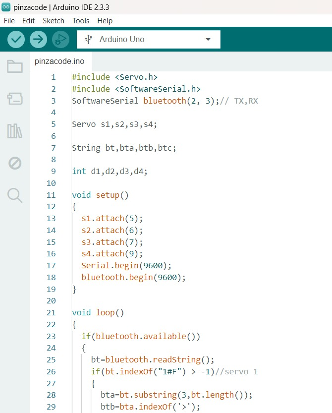 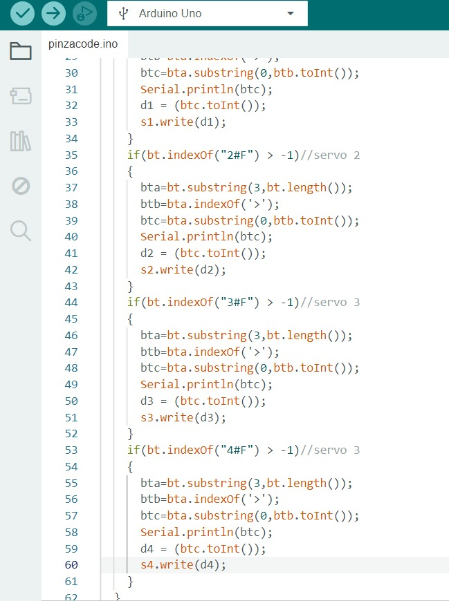Funcionamiento
El brazo, el código, la aplicación y la comunicación podemos ver que cumplen con su trabajo, al manejarlo por bluetooth, pudimos ver que son mas precisos los movimientos ya que al utilizar en nuestra aplicación botones que se manejan con grados, la señal que le mandamos al servo es en grados y estos se ejecutan de manera mas precisa.
Carrito recogedor de pelotas
Introducción
En este proyecto se desarrolló y ensambló un prototipo de vehículo autónomo controlado mediante una placa Arduino UNO. El carro cuenta con dos motores de 6V para la locomoción, un servo para direccionar su movimiento y una pinza mecánica diseñada para recoger pelotas, accionada con precisión. Durante las pruebas, se verificó que todos los componentes electrónicos y mecánicos funcionaron correctamente, cumpliendo con las expectativas del diseño. Este proyecto demuestra la integración exitosa de distintos sistemas en un modelo funcional, destacando tanto su robustez como su versatilidad en aplicaciones prácticas.
Instructables
A continuación el link a nuestro Instructables, para que armes nuestro carrito, en donde te dejamos paso por paso el armado, componentes electrónicos y código para arduino UNO.
Ir anuestro INSTRUCTABLESFuncionamiento completo del carro
Como primer paso probamos nuestro código que si funcionara con nuestro carro, que al enviar nuestras señales al modulo HC-05, nuestro arduino si las interpretara bien para poder ir adelante, atras, izquierda y derecha.
Y como prueba final, tenemos el funcionamiento de nuestra garra y carro en conjunto, el cual cumplió con su tarea de recoger pelotas
Ensamble
Nuestro diseño y ensamble de carro se modelo en solid works, en donde diseñamos cada pieza que incluía, motores, perforaciones de tornillos, pinza, arduino, puente h, modulo HC-05, rueda loca, servomotor, engranes.
El ensamble incluye un total de 34 partes, a continuación el descargable de las piezas:
Ir a nuestras piezas de ensamble